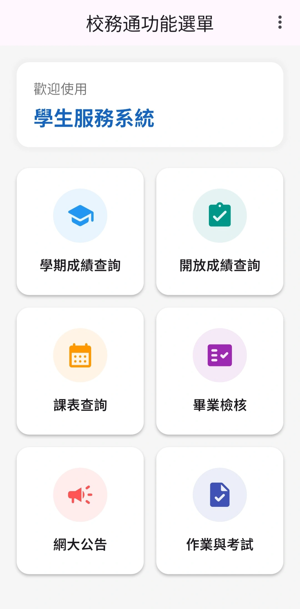

這是一款由學生開發，旨在優化校務系統使用體驗的工具。透過此 App，你可以更直覺地存取校園資訊，減少在傳統網頁間跳轉的時間成本。
核心功能
歷史成績查詢
即時查看當學期成績與過往學期紀錄，掌握學習成效。
開放成績查詢
減少查詢時間，一目了然所有開放的分數。
智能課表
自動帶入課程時間與教室地點，支援離線查看。
畢業審核
視覺化呈現已修得學分與待修課程，畢業進度一目了然。
網大資訊
可以快速查詢到網大公告等資訊，提供使用者較快速的找到需要的資訊。

關於隱私：本程式為非營利性質。所有帳號與密碼僅會儲存於使用者的手機本地端，開發者與第三方伺服器皆無法存取。但有記錄登入次數，以防有人濫用此應用程式。
開始使用
請依照以下步驟完成安裝：
- 確認您的裝置為 Android 系統。
- 點擊下方按鈕下載 APK 安裝檔。
- 若瀏覽器提示安全性警告，請選擇「仍要下載」。
- 開啟檔案並允許「安裝未知來源應用程式」。
使用規範與聲明
1. 本程式完全免費且無廣告，嚴禁轉售。
2. 請勿使用自動化腳本頻繁抓取資料，以免影響校務系統。
3. 顯示之資料僅供參考，實際內容以學校官方系統為準。
4. 下載與安裝即代表您同意自行承擔使用風險。